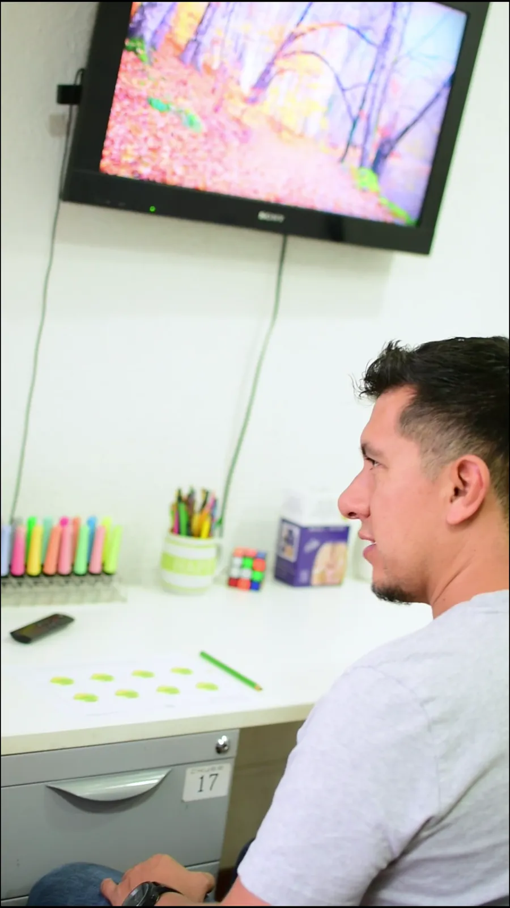

Rehabilitación neuropsicológica
Un trabajo guiado para fortalecer la atención, la memoria y las funciones ejecutivas, y para aprender estrategias que hagan más fácil el día a día.

¿Qué es?
El cerebro cambia con la práctica. La rehabilitación aprovecha esa capacidad.
La rehabilitación neuropsicológica es un conjunto de ejercicios y estrategias diseñados a partir de una evaluación. Su objetivo es mejorar las funciones que están afectadas, compensar las que cuestan más y ganar autonomía en casa, en la escuela o en el trabajo.
Se apoya en la neuroplasticidad: la capacidad del cerebro de reorganizarse y crear nuevas conexiones cuando se entrena de forma constante y bien dirigida.
Qué trabajamos
Cada plan es distinto. Estas son las áreas en las que más trabajamos.
Atención
Sostener el foco por más tiempo y filtrar las distracciones.
Memoria
Estrategias para guardar y recuperar lo importante.
Funciones ejecutivas
Planificar, organizarse, frenar impulsos y resolver problemas.
Lenguaje
Comprensión, expresión y fluidez.
Velocidad de procesamiento
Responder con más agilidad sin perder precisión.
Regulación emocional
Reconocer lo que se siente y manejarlo mejor.
Habilidades sociales
Comunicarse y relacionarse con más confianza.
Autonomía
Rutinas y apoyos para el día a día.
¿Para quién es?
Niños
- Con TDAH o dificultades de atención.
- Con dificultades de aprendizaje.
- Con retrasos en el desarrollo o autismo.
Adolescentes
- Con problemas de organización y estudio.
- Con TDAH que afecta el colegio.
- Que necesitan estrategias para ganar autonomía.
Adultos
- Después de un traumatismo craneal, un ACV u otra lesión cerebral.
- Con cambios en la memoria o la atención.
- Como parte del proceso de EMT.
Cómo trabajamos
Un plan con metas claras y revisiones en el camino.
Punto de partida
Partimos de una evaluación neuropsicológica, nueva o reciente, para saber exactamente qué trabajar.
Plan con objetivos
Definimos metas concretas con la persona y su familia: qué queremos lograr y cómo lo vamos a notar.
Sesiones de entrenamiento
Ejercicios con material, juegos y recursos digitales adaptados a la edad y a los intereses de cada persona.
Seguimiento
Medimos los avances, ajustamos el plan y damos pautas para practicar en casa.

Lo que buscamos juntos
- Más atención y menos olvidos en el día a día.
- Estrategias que la persona puede usar sola.
- Más autonomía en casa, en la escuela o en el trabajo.
- Una familia que sabe cómo acompañar.
- Avances que se miden y se pueden ver.
Preguntas frecuentes
¿Tienes otra duda? Escríbenos por WhatsApp y te respondemos.
¿Necesito una evaluación antes de empezar?
Sí. El plan de rehabilitación se arma a partir de una evaluación neuropsicológica. Si ya tienes una reciente, la revisamos juntos antes de empezar.
¿Cuántas sesiones son?
Depende de los objetivos y de cómo avance cada persona. Los definimos juntos al inicio y revisamos el progreso en el camino.
¿Los padres participan?
Sí. En el trabajo con niños y adolescentes damos pautas para practicar en casa, porque lo que se refuerza fuera de la sesión avanza más rápido.
¿Se combina con la EMT?
Sí. En el proceso de Estimulación Magnética Transcraneal, la rehabilitación neuropsicológica es parte del tratamiento.
Para leer con calma
TDAH: mucho más que distracción
Cómo se manifiesta el trastorno por déficit de atención e hiperactividad en niños, adolescentes y adultos, qué mitos lo rodean y cómo se evalúa con cuidado.
Neurodivergencia: otras formas de pensar, aprender y sentir
Qué significa ser neurodivergente, qué condiciones incluye el término y por qué una evaluación ayuda a entenderse mejor, sin intentar cambiar quién eres.
Autismo: señales tempranas, diagnóstico y acompañamiento
Qué es el trastorno del espectro autista, qué señales observar según la edad, cómo se diagnostica y qué tipo de apoyo ayuda de verdad a niños, adolescentes y adultos.